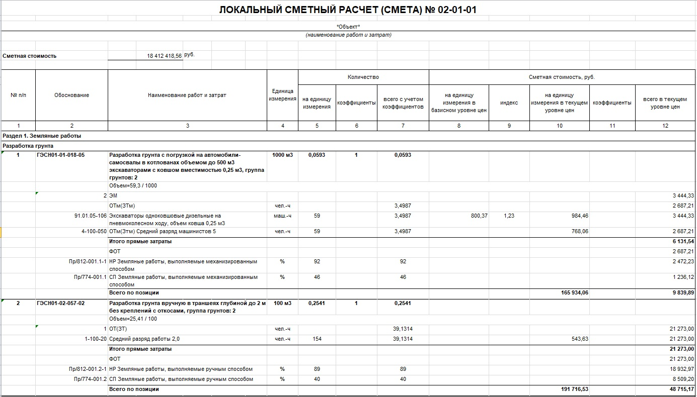

Локальные сметы

Локальная смета – база, которая играет основную роль в формировании стоимости строительства.
Локальная смета включает в себя следующие пункты:
Перечень работ. Приводится развёрнутое описание всех работ, которые необходимо выполнить.
Объемы работ. Указываются объемы работ с единицами измерения, например, площадь в квадратных метрах, объем в кубических метрах или длина в погонных метрах.
Единичные расценки. Определяется стоимость выполнения одной единицы работы: материалы, оплата труда, использование оборудования, транспортные расходы.
Стоимость материалов. Рассчитывается, сколько будут стоить материалы, необходимые для выполнения работ (или вносится из ТТН)
Затраты на труд. Подсчитывается, сколько нужно будет заплатить рабочим и специалистам за их труд.
Использование оборудования и техники. Оценивается, сколько будет стоить аренда и эксплуатация техники, которая понадобится для работ, включая топливо, техническое обслуживание техники.
Накладные расходы. Учитываются затраты, не связанные с выполнением работ, но необходимые для строительства: расходы на управление процессом строительства, аренда дополнительного оборудования, содержание строительного лагеря и т. д.
Плановая прибыль подрядчика. Сумма, которая покажет доход подрядчика при выполнения работ.
Резерв на непредвиденные расходы. Предусматриваются средства на случай, если в проекте произойдут изменения, вырастут цены на материалы или возникнут другие неожиданные ситуации.
Коэффициенты. В расчеты включаются поправочные коэффициенты, которые учитывают, особенности региона, сезонность, сложность работ и др.
Итоговая стоимость раздела. Все затраты суммируются, чтобы получить общую стоимость работ по разделу сметы.
Каждую работу необходимо проверить, чтобы получить полную стоимость при расчете.
Рекомендуемые образцы локальных сметных расчетов (смет) приведены для базисно-индексного метода в Приложении № 2 к Методике, для ресурсно-индексного метода – в Приложении № 3 к Методике, для ресурсного метода – в Приложении № 4 к Методике.

Номер локального сметного расчета (сметы) состоит из трех блоков цифр.
Первый и второй блоки цифр совпадают с номером объектной сметы. Третий блок - порядковый номер, который показывает, какой по счёту является локальная смета в рамках объектного расчета.
Например: ЛС-02-01-01, где:
«ЛС» — обозначение локального сметного расчёта;
«02» — часть, относящаяся к номеру объектного сметного расчёта;
«01» — вторая часть номера объектного сметного расчёта;
последний «01» — порядковый номер локального сметного расчёта в рамках объектного.
Локальные сметы создаются для конструктивных решений и/или видов работ, учитывается технологическая последовательность их выполнения, а также условия, в которых работы будут проводиться.
Результаты расчета и итоговые данные указываются в локальной смете в рублях с округлением до двух знаков после запятой (до копеек).